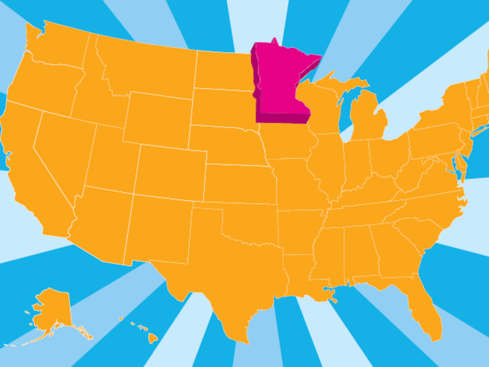

I have created a list of the top 10 places I believe locals and those from out of the state can enjoy.
Minnesota is a wonderful state with something for everyone.

Map image of Minnesota
Here begins the list of my top 10:
- 1. - A scenic drive across Minnesota’s North Shore. Grand Portage National Monument near the Canadian border) for a view of fur-trade life in the late 1700's. The High Falls (tallest in MN) at Grand Portage State Park, Devil's Kettle Waterfall at Judge CR Magney State Park (note, there are about 175 stairs on this trail) and the Falls Loop Trail at Gooseberry Falls State Park, breath taking. The Angry Trout in Grand Marais is right on the waterfront and was a great place for lunch. Check out amazing views at Wayswaugoing Bay Overlook, Palisade Head (lakeside cliffs) and Split Rock Scenic Overlook (easiest spot for a perfect lighthouse photo opportunity). There is a lot to see, plan for more than a day trip.
- 2. - Minnesota Institute of Art (Minneapolis). Travel through 4,000 years of world history as you view more than 80,000 works of sculpture, photography, paintings, drawings and prints.
- 3. - Mall of America (Bloomington) . Mall of America(R) is one of the top tourist destinations in the country! The Mall welcomes more than 40 million visitors a year from across the country and around the world to enjoy over 520 retail and specialty stores including Nordstrom and Macy's. Experience unique dining and entertainment at over 50 restaurants plus enjoy leading attractions like the nation's largest indoor theme park, Nickelodeon Universe(R) indoor theme park, SEA LIFE(R) Aquarium, LEGO(R), A.C.E.S. Flight Simulator, Moose Mountain Adventure Golf and more! By hosting more than 400 events each year, the Mall has become the place where fans can meet and greet their favorite celebrities or take part in interactive, one-of-a-kind events.
- 4. - Minnehaha Park . One of the city's oldest and most popular parks.
- 5. - Gooseberry Falls State Park , This North Shore Park is home to a spectacular four-level waterfall, scenic overlooks and is ideal for trout fishing.
- 6. - Aerial Lift Bridge . Originally constructed in 1905 as an aerial lift, this unusual elevator bridge is 386 feet long and spans the canal entrance to Duluth Harbor.
- 7. - Target Field, Home of the Minnesota Twins Baseball Team, lots of shaded areas, easy to get in and out of the stadium.
- 8. - Minneapolis Sculpture Garden , One of the crown jewels of the city’s park system, the Minneapolis Sculpture Garden unites two of Minnesota’s most cherished resources—its greenspace and its cultural life. A partnership with the Minneapolis Park & Recreation Board, the Garden is a top destination for tourists to enjoy art like the iconic Spoonbridge and Cherry in an outdoor park setting.
- 9. - Cathedral of Saint Paul , This Classical Renaissance-style Cathedral dating back to 1915 features a splendid interior of six chapels, imported marble columns, large statues of the four evangelists and beautiful rose windows.
- 10. - Spam Museum and Visitor Center . This 14,000 square foot museum features 9 SPAMtastic galleries with interactive games and photo opportunities. Admission is free to all visitors.
"You betcha!"